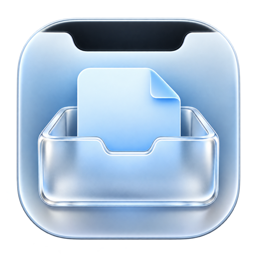

需要时，它就在。
靠近刘海两侧或下沿，桌面文件区立即展开。鼠标移开，它就安静收起。

NotchDesk正在忙的事，不必切走。
鼠标轻轻一靠，桌面文件就在手边。
v0.1.5 · Apple Silicon · macOS 13+ 试用版
尚未经过 Apple 公证，首次打开请阅读安装说明。
附件、图片、文档。
用到桌面文件时，向上一点就好。
在应用里，靠近刘海即可展开，离开约 0.15 秒后隐藏。这里点击刘海即可体验示意。
不用先找桌面，再找回刚才的窗口。
把这段小小的来回，变成一次拖放。
靠近刘海两侧或下沿，桌面文件区立即展开。鼠标移开，它就安静收起。
把文件拖到支持文件拖放的邮件、聊天或其他应用中，也可以双击直接打开。
把文件拖进面板，即可复制到桌面。遇到同名文件自动编号，保留已有文件。
跟随系统的浅色与深色模式，融入你的 Mac。
直接展示桌面文件夹，文件增减会自动更新。
无需注册。应用不上传文件；iCloud 桌面同步由系统管理。
NotchDesk v0.1.5 · 2026.10.24
下载 Apple Silicon 版 M 系列 Mac · macOS 13 或更新版本在本机「下载」文件夹解压 ZIP，再把 NotchDesk.app 拖入「应用程序」。
当前试用版尚未经过 Apple 公证。若提示无法验证开发者，确认文件来自本网站后，到「系统设置 → 隐私与安全性」选择「仍要打开」。查看 Apple 说明 ↗
出现提示时允许访问桌面，随后将鼠标移到刘海附近。菜单栏托盘图标可以展开面板或退出。
可以。没有刘海时，感应区位于主屏幕顶部中央；当前下载包仍要求 Apple 芯片和 macOS 13 或更新版本。
拖入采用复制方式，来源文件会保留。同名文件会添加编号，避免覆盖桌面上已有的文件。拖出也使用复制语义，接收方式由目标应用决定。
来源应用需要提供文件或支持延迟生成文件的拖放协议。纯文字、网页链接不会自动转换成文件。
可以。NotchDesk 采用 MIT 许可证开源，你可以在 GitHub 仓库 查看源码、构建说明和更新记录，也欢迎反馈问题。
请提供 macOS 版本、Mac 型号和复现步骤，发送到 915784391@qq.com。请勿附上包含私人文件内容的截图。
从「取一个桌面文件，为什么要切走窗口」开始。
由点铭设计，通过 AI 辅助开发，持续打磨每一次靠近和拖放。